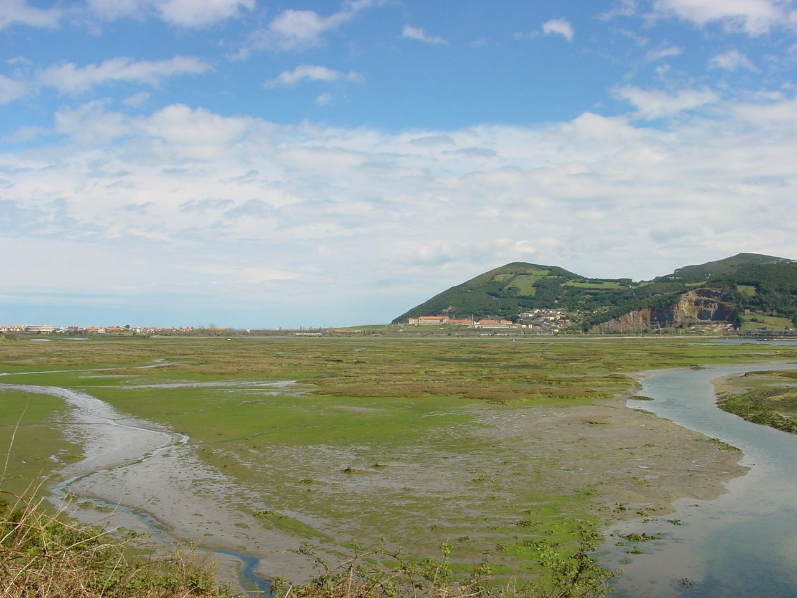
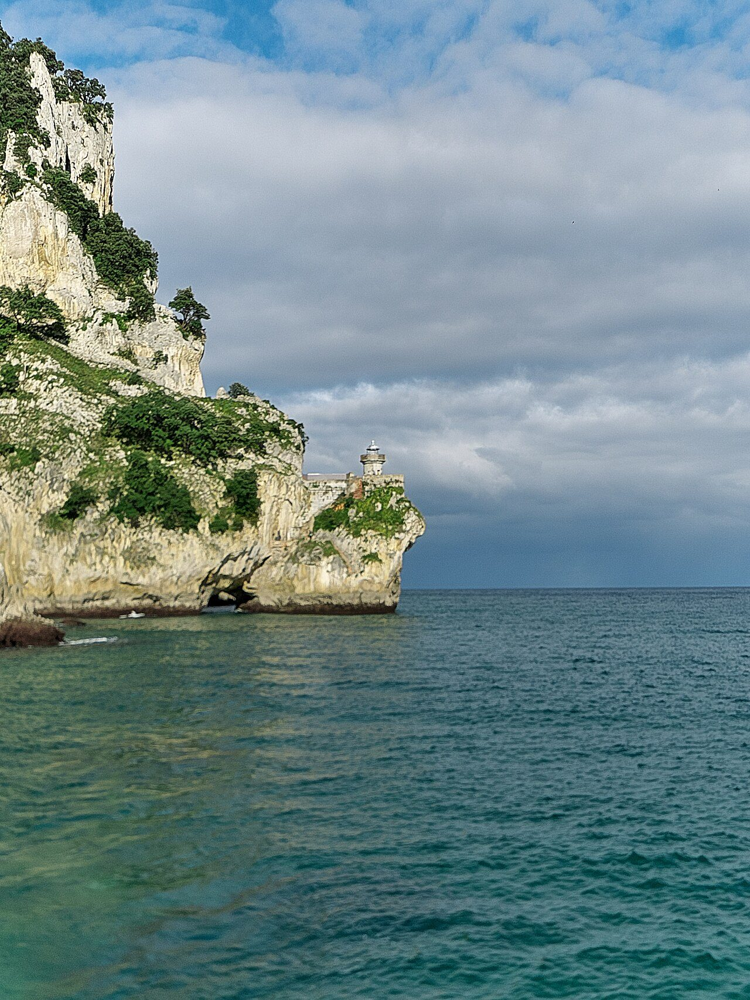

Parque Natural de las Marismas de Santoña, Victoria y Joyel
Criterios: PN 5.1, PN 6.2
🤔 Pienso5 min
Qué hago aquí: Piensa un momento y contesta con lo que ya sabes. No pasa nada si no lo sabes: es para empezar.
Imagina que vuelas desde Holanda hasta África. ¿Dónde pararías a descansar y comer? ¿Qué necesitarías encontrar?
📖 Leo y aprendo15 min
Qué hago aquí: Lee despacio, mira los dibujos y los ejemplos, y quédate con la idea clave del final.

Foto: Lourdes Cardenal · CC BY-SA 3.0 · Cantabria Santoña marismas 02 lou.JPG
Las marismas son una gasolinera para las aves migratorias que viajan entre el norte de Europa y África: aquí descansan y comen. Algunas, como muchos patos y limícolas, pasan aquí el invierno. La más famosa es la espátula, que para en otoño y en primavera.
El Monte Buciero, junto a Santoña, completa el parque: tiene un encinar cantábrico, acantilados con aves marinas y fuertes y faros construidos para defender la entrada de la bahía.

Foto: Andreas Trepte · CC BY-SA 2.5 · Eurasian Spoonbill.jpg

Foto: Jl FilpoC · CC BY-SA 4.0 · Faro del Caballo (Santoña).jpg
✏️ Hago25 min
Qué hago aquí: Haz las actividades en orden. Empieza siempre por las básicas.
Explica por qué se dice que las marismas son una «gasolinera» para las aves. ¿Qué encuentran en ellas que no hay en una playa o en un prado?
Explica qué es el Convenio de Ramsar y qué es una ZEPA. ¿Por qué las marismas de Santoña tienen las dos figuras?
Las espátulas que paran en Santoña nacen en Holanda e invernan en Senegal o Mauritania. Sitúa los tres lugares en un mapa y explica por qué Santoña es una parada clave.
✏️ Puedes responder escribiendo, con un dibujo o un esquema, o contándolo en voz alta.
El parque une marismas y el Monte Buciero. Explica qué aporta cada uno y por qué el encinar del Buciero es especial.
Si la distancia de Holanda a Senegal es de unos 4500 km y una espátula vuela unos 300 km al día, ¿cuántos días de vuelo necesita? ¿Por qué no puede hacerlo sin paradas?
Las marismas se rellenaron durante siglos. Explica qué ha cambiado en nuestra forma de verlas y pon dos ejemplos de lo que se gana al recuperar una marisma.
Las anillas de colores permiten seguir a las aves. Explica cómo funciona el anillamiento y qué preguntas científicas permite responder.
🚀 Amplío (si quieres saber más)
Qué hago aquí: ¿Has terminado? Lee la curiosidad o elige el reto. Es voluntario.
Busca los últimos datos de censos de aves invernantes en las marismas de Santoña (número de aves y especies más abundantes). Haz un gráfico de barras con las cinco especies más numerosas y explica qué amenazas podrían hacer bajar esas cifras.
✅ Compruebo5 min
Qué hago aquí: Contesta sin mirar la ficha y marca cómo lo llevas.